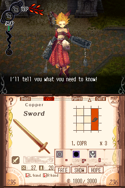
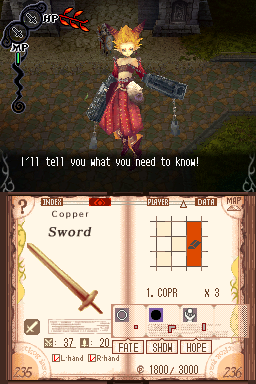

Avalon Code

Not Complete on 2023-05-03
3 / 5
Release Date: Mar 10, 2009
Meta Score: 71
Screenshots
 

Notes
Avalon Code is an action RPG.
The premise is that you have been chosen by the "Book of Prophecy". The world is ending, it's your job to record in the book things worthy to be recreated in the new world. And of course other people want to take it off you and use it for their own ends.
The game uses the top screen for action, and the bottom screen for the book. This is really just menus/maps/inventory/etc, but the style of having it all be part of the magic book is nice. It also has a unique mechanic, where you record things in the book and can then manipulate their "DNA" by moving little blocks around on a grid. When you first take a negative modifier off your sword and put it on an enemy instead this is a cool idea.
The problem is, it's attached to a pretty mediocre ARPG. And the item manipulation system ultimately doesn't have that much depth to it.
Ended up putting it down rather than trying to get through the whole thing.